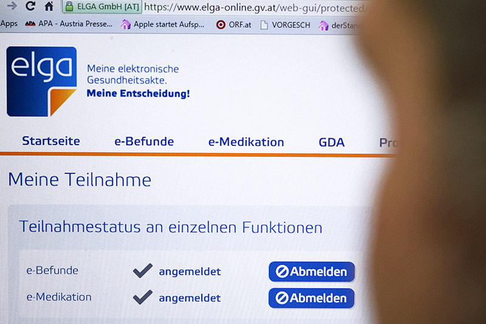

Denn im Datenschutz-Anpassungsgesetz für Wissenschaft und Forschung findet sich eine sehr breite Definition für wissenschaftliche Einrichtungen, die mit weitreichenden Befugnissen zur Verarbeitung von personenbezogenen Daten ausgestattet werden sollen. Unter den Daten sollen sich auch Informationen des Elektronischen Gesundheitsakts (ELGA) befinden.
Während Universitäten und Industrie die Pläne begrüßten, warnten Opposition, Ärztekammer und Datenschützer vor Missbrauch. Auch Sozialministerin Beate Hartinger-Klein (FPÖ) sprach sich am Mittwoch gegen die Weitergabe von ELGA-Daten für Forschungszwecke aus. Einer breiten Öffentlichkeit wurden die umstrittenen Änderungen trotz vorheriger Begutachtung bisher nicht bekannt - wohl auch deshalb, weil die Novelle des Forschungsorganisationsgesetzes (FOG) in einem der 13 Datenschutz-Anpassungsgesetze der Regierung verborgen ist. Die Verabschiedung im Ministerrat am 21. März ging sang- und klanglos vonstatten.
Geplant ist konkret, dass persönliche Daten der Österreicherinnen und Österreicher, die der Bund erhoben und abgespeichert hat, für Forschungszwecke abgefragt werden dürfen („Registerforschung“). Die Namen der Betroffenen soll durch eine Kennzahl ersetzt werden, um die namentliche Zuordnung ihrer Daten zu verhindern.
Voraussetzung ist, dass die zuständigen Minister der Öffnung „ihrer“ Datenbanken zustimmen. Zugriff erhalten sollen ab 2019 nicht nur Universitäten, Fachhochschulen und Museen. Auch Forschungsabteilungen von Industrieunternehmen und Einzelpersonen im In- und Ausland können beim Verkehrsministerium um eine Genehmigung ansuchen.
Aus Sicht der Datenschutzorganisation epicenter.works reicht das bloße Löschen der Namen für eine verlässliche Anonymisierung nicht aus. Direktor Thomas Lohinger warnt vor Missbrauch und erinnert daran, dass auch Cambridge Analytica, die Skandalfirma in der aktuellen Facebook-Affäre, als Forschungsprojekt auftrat. „Hochsensible Gesundheitsdaten für globale Marktforschungszwecke zu öffnen ist eine ganz schlechte Idee. Die Cambridge Analyticas dieser Welt können einzelne Personen leicht in den mangelhaft anonymisierten Daten wiederfinden“, so der Datenschützer.

Datenschützer Thomas Lohinger warnt vor der "Cambridge Analytica dieser Welt"
Das Wissenschaftsministerium hält dem entgegen, dass von Forschern eine Reihe von Datensicherheitsmaßnahmen verlangt werde. „Vorsätzlich rechtswidriges Verhalten wird jedoch auch durch über die im FOG hinausgehenden Maßnahmen nie gänzlich ausgeschlossen werden können“, räumt das Ministerium ein. Allerdings müssten die Wissenschaftler einen eigenen Datenschutzbeauftragten installieren, der auf Datensicherheit achte.
Die Veröffentlichung der Personenkennzeichen sei verboten. Und das Gesetz schreibe den Forschern eine „lückenlose Dokumentation der Zugriffe“ und die Geheimhaltung der Daten vor. Grundsätzlich verfügt der Bund über eine ganze Reihe von Datenbanken, die Informationen über Gesundheit, Bildung, Sozialversicherung und Steuerdaten der Österreicherinnen und Österreicher enthalten. Eine genaue Liste jener „Register“, die für Forschungszwecke zugänglich sein sollen, gibt es noch nicht. Sie soll per Verordnung festgelegt werden, wobei auch die jeweils zuständigen Minister zustimmen müssen.
Explizit vom Zugriff ausgeschlossen werden im Forschungsorganisationsgesetz nur Datenbanken der Justiz und das Strafregister, nicht aber ELGA. Im Gegenteil: In den Erläuterungen wird explizit festgehalten, dass die neuen Regeln auch für ELGA gelten würden, obwohl das dortige Gesetz vorsieht, dass nur die Patientinnen und Patienten selbst und die behandelnden Ärztinnen und Ärzte Daten abfragen dürfen. Die im ersten Entwurf vorgesehene Möglichkeit der Bürgerinnen und Bürger, die Weitergabe ihrer Daten generell zu verweigern, wurde in der Regierungsvorlage wieder gestrichen.
In die Erstellung des Gesetzes nicht eingebunden war die Datenschutzbehörde im Justizministerium, die erst durch den Gesetzesentwurf von den Plänen erfuhr. Allerdings verweist das Wissenschaftsministerium darauf, dass in der Begutachtung mit der Datenschutzbehörde und dem Datenschutzrat eine Reihe von Fragen ausgeräumt worden seien. Auch habe es zahlreiche Gespräche mit anderen Ministerien sowie mit datenschutzrechtlichen Experten gegeben.
Die vorgesehen Freigabe auch von ELGA-Daten ruft nun Datenschützer und die Opposition auf den Plan
Beschlossen hatte der Ministerrat die Änderungen schon am 21. März. Derzeit wird die Regierungsvorlage im Verfassungsausschuss und ab Montag im Forschungsausschuss behandelt. Die Datenschutzbehörde hatte schon in der Begutachtung kritisiert, dass die Pläne weit über bloße Anpassungen an das neue EU-Datenschutzrecht hinausgehen.
Was die Anonymisierung der Daten angeht, attestiert die Datenschutzbehörde den aktuellen Plänen tatsächlich Fortschritte gegenüber dem Erstentwurf. Dennoch halten die Datenschützer im Justizministerium das Gesetz für unausgewogen. Ziel sei offenbar, „es den Forschungseinrichtungen so leicht wie möglich zu machen“, so der stellvertretende Leiter Matthias Schmidl auf APA-Anfrage.